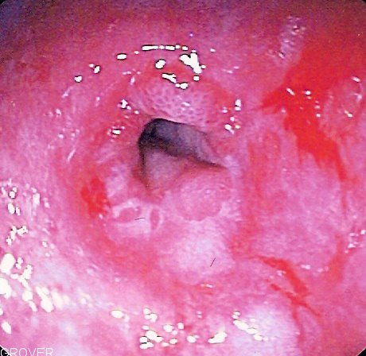

Tóm tắt nhanh
- Khi thuốc chưa hiệu quả, bước tiếp theo không phải lúc nào cũng là tăng liều.
- Cần xác nhận chẩn đoán, kiểm tra cách dùng thuốc và tìm nguyên nhân khác gây triệu chứng.
- Đánh giá có hệ thống giúp tránh điều trị kéo dài không cần thiết và lựa chọn đúng người bệnh cần can thiệp.
Ợ nóng hoặc ợ trớ vẫn tiếp diễn dù đã dùng thuốc là tình huống khiến nhiều người lo lắng. Tuy nhiên, triệu chứng dai dẳng không đồng nghĩa chắc chắn với GERD kháng trị. Có người dùng thuốc chưa đúng cách, có người chưa được xác nhận GERD, và cũng có người mắc một rối loạn khác có biểu hiện giống trào ngược.
Điều quan trọng là tìm đúng nguyên nhân trước khi tiếp tục tăng thuốc hoặc cân nhắc phẫu thuật.
1. GERD kháng trị là gì?
Theo cách tiếp cận được nêu trong Hướng dẫn Hội Khoa học Tiêu hóa Việt Nam 2025, GERD kháng trị cần có bằng chứng khách quan xác nhận GERD và triệu chứng còn dai dẳng mặc dù đã tối ưu hóa điều trị nội khoa.
Một định nghĩa thường dùng trong đồng thuận chuyên môn là triệu chứng vẫn tồn tại dù đã điều trị PPI liều gấp đôi trong ít nhất 8 tuần, trên nền có bằng chứng khách quan của GERD. Bằng chứng có thể gồm viêm thực quản LA B–D, Barrett thực quản đoạn dài, hẹp thực quản hoặc bất thường trên đo pH/pH – trở kháng phù hợp.
Cần phân biệt:
- GERD kháng trị: có GERD được chứng minh khách quan và triệu chứng vẫn dai dẳng sau điều trị tối ưu.
- Triệu chứng trào ngược dai dẳng: người bệnh có bằng chứng GERD trước đó nhưng đáp ứng không đầy đủ.
- Triệu chứng giống trào ngược dai dẳng: biểu hiện như đau ngực, ho, khò khè hoặc vướng họng nhưng chưa chứng minh được GERD là nguyên nhân.
2. Vì sao điều trị chưa hiệu quả?
Những nguyên nhân thường gặp gồm:
Dùng thuốc chưa đúng thời điểm: PPI thông thường cần uống trước bữa ăn 30–60 phút.
Không tuân thủ hoặc bỏ liều: hiệu quả giảm khi dùng không đều.
Liều hoặc thời gian điều trị chưa phù hợp: cần đánh giá lại phác đồ trước khi kết luận thất bại.
Trào ngược không acid hoặc trào ngược thể tích: PPI giảm độ acid nhưng không nhất thiết ngăn mọi đợt trào ngược.
Thoát vị khe hoành hoặc bất thường hàng rào chống trào ngược.
Chẩn đoán khác: tăng cảm giác thực quản, ợ hơi trên dạ dày (supragastric belching), hội chứng nhai lại, rối loạn vận động thực quản, viêm thực quản tăng bạch cầu ái toan, khó tiêu chức năng hoặc bệnh tim mạch.
Triệu chứng ngoài thực quản có thể do bệnh lý tai mũi họng, hô hấp hoặc nguyên nhân khác.
Đọc thêm: cách dùng PPI đúng thời điểm và an toàn
3. Bác sĩ đánh giá như thế nào?
Bước đầu là rà soát triệu chứng, thuốc, thời điểm uống, tuân thủ điều trị, cân nặng, bữa ăn và giấc ngủ. Đau ngực cần được đánh giá để loại trừ nguyên nhân tim mạch khi phù hợp.


Nội soi tiêu hóa trên giúp phát hiện viêm thực quản, hẹp, Barrett, thoát vị khe hoành và bệnh lý khác. Ở một số trường hợp, bác sĩ có thể chỉ định nội soi sau khi ngừng PPI trong khoảng thời gian phù hợp để tăng khả năng phát hiện tổn thương, nhưng người bệnh không tự ngừng thuốc nếu chưa có hướng dẫn.
Đo pH – trở kháng 24 giờ có thể xác định mức độ tiếp xúc acid, số đợt trào ngược và mối liên quan giữa triệu chứng với trào ngược. Nếu GERD chưa được chứng minh, xét nghiệm thường được thực hiện khi ngừng PPI theo quy trình của cơ sở chuyên khoa. Nếu GERD đã được xác nhận nhưng triệu chứng còn khi điều trị tối ưu, bác sĩ có thể cân nhắc đo khi đang dùng thuốc.
HRM được chỉ định khi có nuốt nghẹn/nuốt khó, nghi ngờ rối loạn vận động hoặc trước phẫu thuật chống trào ngược.
4. Hướng điều trị
Điều trị bắt đầu bằng việc sửa những yếu tố có thể điều chỉnh:
- Xác nhận người bệnh dùng PPI đúng thời điểm và đều đặn.
- Tối ưu hóa PPI: bác sĩ có thể tăng lên hai lần/ngày hoặc đổi sang một PPI khác tùy tình huống.
- Tiếp tục giảm cân nếu thừa cân, ăn tối sớm, kê cao đầu giường khi có triệu chứng ban đêm và tránh yếu tố kích hoạt đã xác định.
- Cân nhắc thuốc bổ sung có mục tiêu: alginate cho triệu chứng sau ăn; thuốc kháng H2 vào ban đêm ở người phù hợp; baclofen chỉ trong một số trường hợp được lựa chọn kỹ. Không phối hợp thuốc một cách máy móc.
- Nếu không có bằng chứng GERD hoặc xét nghiệm cho thấy tăng cảm giác thực quản/rối loạn chức năng, hướng điều trị sẽ khác và có thể cần phối hợp chuyên khoa.
Không nên tiếp tục tăng liều PPI vô thời hạn khi chưa xác minh chẩn đoán và cơ chế triệu chứng.
5. Khi nào cân nhắc can thiệp hoặc phẫu thuật?
Chỉ cân nhắc khi GERD đã được chứng minh khách quan, triệu chứng điển hình còn dai dẳng sau tối ưu điều trị hoặc người bệnh không dung nạp thuốc và có giải phẫu phù hợp. Trước can thiệp cần đánh giá nội soi, đo pH/pH – trở kháng và HRM theo chỉ định để loại trừ rối loạn vận động quan trọng và dự đoán nguy cơ nuốt khó sau mổ.
Phẫu thuật không phải giải pháp cho mọi trường hợp “uống PPI không khỏi”. Nếu triệu chứng thực tế do tăng cảm giác thực quản, ợ hơi trên dạ dày hoặc rối loạn chức năng khác, phẫu thuật chống trào ngược có thể không giải quyết được vấn đề.
Đọc thêm: khi nào có thể cân nhắc phẫu thuật chống trào ngược
6. Khi nào cần đi khám ngay?
Nuốt nghẹn tiến triển, nuốt đau, sụt cân không chủ ý, nôn kéo dài, nôn ra máu, đi ngoài phân đen hoặc thiếu máu cần được thăm khám sớm. Đau ngực cấp tính kèm khó thở, vã mồ hôi hoặc choáng cần cấp cứu để loại trừ bệnh tim mạch.
Câu hỏi thường gặp
Khi nào được gọi là GERD kháng trị?
Cần có bằng chứng khách quan về GERD và triệu chứng còn dai dẳng sau khi đã tối ưu hóa điều trị. Một định nghĩa thường dùng là còn triệu chứng dù dùng PPI liều gấp đôi ít nhất 8 tuần.
Vì sao uống PPI mà vẫn ợ nóng?
Có thể do dùng thuốc chưa đúng thời điểm, tuân thủ chưa đủ, trào ngược không acid, quá mẫn thực quản hoặc nguyên nhân khác không phải GERD.
GERD kháng trị có cần nội soi không?
Bác sĩ cân nhắc nội soi và các thăm dò sinh lý thực quản tùy tình huống, đặc biệt khi triệu chứng kéo dài hoặc đang xem xét can thiệp.
Tài liệu tham khảo
Hội Khoa học Tiêu hóa Việt Nam. Hướng dẫn chẩn đoán và điều trị bệnh trào ngược dạ dày – thực quản. 2025; Khuyến cáo 5, 7, 10, 17, 19.
Katz PO, et al. ACG Clinical Guideline for the Diagnosis and Management of GERD. Am J Gastroenterol. 2022.
Gyawali CP, et al. Updates to the modern diagnosis of GERD: Lyon Consensus 2.0. Gut. 2024.
Yadlapati R, et al. AGA Clinical Practice Update on the Personalized Approach to the Evaluation and Management of GERD. 2022.
Miễn trừ trách nhiệm: Bài viết cung cấp thông tin giáo dục sức khỏe, không thay thế khám, chẩn đoán hoặc chỉ định điều trị của bác sĩ. Không tự ý dùng, ngừng hay đổi liều thuốc. Khi có dấu hiệu nguy hiểm, gọi 115. Đọc đầy đủ.